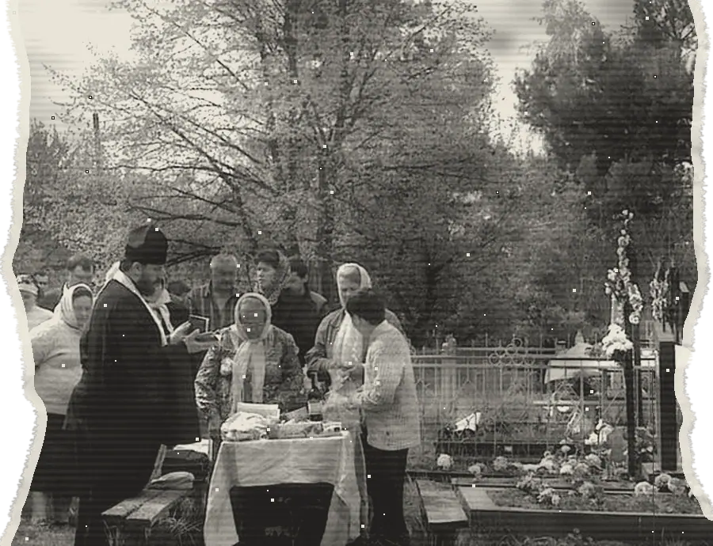
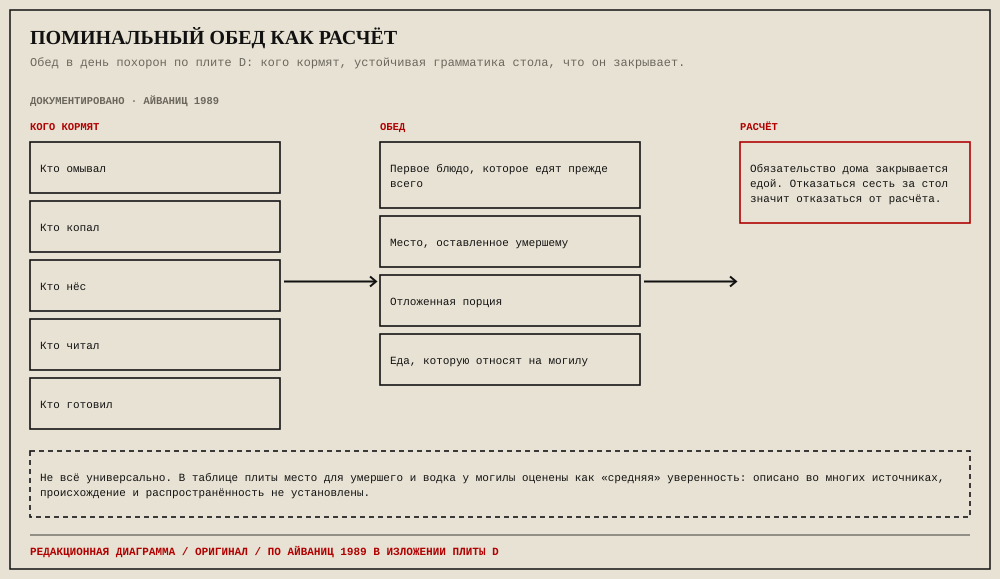

ТОМ I · ЛИСТ D · 04 / 09
СТОЛ
Кормить мёртвых, кормить живых
Поминальная трапеза — место, где умершего прямее всего принимают за человека со вкусами, местом и аппетитом.
Документировано в XIX–XXI веках · Россия; один украинский пример, помеченный как таковой · Православная поминальная практика; семейный обычай

D / 01
Горячий обед
В день похорон кормили всех, кто пришёл. Зеленин в обзоре восточнославянской этнографии (1927; издание 1991 года, § 136, с. 356–357) объясняет название «горячего обеда» (русск. горячий, белорус. гарачы): к нему всегда подавали горячий хлеб, который не режут ножом, а ломают руками, чтобы поднимался пар. Считалось, что умерший испытывает те же потребности, что и живой, и отчасти питается паром от еды. Украинцы разламывали свежий хлеб надвое и клали на окно, чтобы горячий пар дошёл до покойного.
Пока умерший ещё в доме, его угощали блинами: первый, ещё горячий, иногда смазанный мёдом, клали на лавку в головах, на окно или на божницу. На похоронах и поминках для умершего ставили отдельный прибор, на общем столе или на особом столе в углу под образами, и для него выливали на угол стола первую ложку любого блюда и первый стакан воды. Обычными блюдами были кутья (она же коливо, канун) — варёный ячмень или пшеница с мёдом, разведённым водой, затем блины, кисель с мёдом, яичница и каша; главным напитком было пиво или брага, подслащённые мёдом. На Русском Севере гости получали после обеда деревянную ложку на память об умершем. Зеленин соединяет русский, украинский и белорусский материал и ссылается на архив Русского географического общества по томам и номерам; эти файлы не видели, датировок он не даёт.
Порядок поминального обеда в русских губерниях соблюдался неукоснительно (Кремлева 1999, с. 526–527; Байбурин 1993, с. 110–112). Трапеза начиналась с обязательных трех ложек кутьи (кануна, колива), которую каждый гость должен был съесть прежде прочих блюд. Ножи и вилки строго исключались как колющие предметы, способные ранить невидимого гостя; ели только деревянными ложками. После кутьи подавали горячие щи или рыбную уху с горячим хлебом, затем кашу или лапшу, после чего следовали блины с медом. Завершался обед густым овсяным или ягодным киселем; подача киселя служила условным знаком окончания трапезы, после чего гости благодарили хозяев и расходились.

| Еда | Документированный контекст | Примечания | Достоверность |
|---|---|---|---|
| Кутья / коливо | Варёное зерно с мёдом; церковная панихида; семейный стол | Руководство называет пшеницу с мёдом; Зеленин — ячмень или пшеницу в воде с мёдом; риса и изюма в прочитанных местах нет | документировано |
| Блины | Первый блин, горячий, иногда смазанный мёдом, клали возле умершего, пока он ещё в доме; блины подавали на похоронах и поминках (Зеленин, без дат) | Также календарная еда; тот же предмет, но другой довод | документировано |
| Хлеб | Подают горячим, ломают руками, не режут; свежий хлеб кладут на окно (украинцы) | Причина по Зеленину — пар; хлеба, который несут на могилу, в прочитанном месте нет | документировано |
| Мёд | В кутье, киселе и пиве; им смазывают первый блин | Руководство читает мёд как сладкую жизнь в Царстве; Зеленин символического толкования не даёт | документировано |
| Водка | Бутылку клали в гроб мужчине «ещё недавно»; для умерших выливали на стол у белорусов | Главный напиток у Зеленина — пиво или брага с мёдом; происхождение водки за столом не установлено | средняя |
| Место для умершего | Отдельный прибор на общем столе или на столе в красном углу; на угол выливают первую ложку и первый стакан | Зеленин даёт без указания региона | документировано |
D / 04
Кутья и двусмысленность зерна
Кутья — варёное зерно, подслащённое мёдом, и в церковной форме, коливо, её приносят на панихиду и освящают. «Новая скрижаль» (1803, гл. XXIII, § 3) называет варёную пшеницу с мёдом и даёт толкование: пшеница, которая умирает в земле и затем приносит плод, означает воскресение мёртвых, а мёд — сладкую, блаженную жизнь, ожидающую праведных в Царстве Небесном. Она добавляет толкование Симеона Солунского о семенах, приносимых так же.
Этнографические материалы показывают, что поминальный стол не был ни сугубо церковным чином, ни простым «языческим пережитком» (Байбурин 1993, с. 110–115; Кремлева 1999, с. 526–529). Церковное освящение колива и домашнее угощение горячим паром и медовым зерном дополняли друг друга. В то время как богословские толкования видели в зерне метафору воскресения, крестьянский быт воспринимал поминальный стол как сакральный акт взаимного кормления: он умилостивлял душу, скреплял род и оберегал живых от нежелательного возвращения покойника.



Пост
Когда стол приходится отложить
Стол подчиняется церковному календарю. Справочная страница о родительских субботах сообщает: если человек умер накануне или в течение Великого поста, поминовения на третий, девятый и сороковой день не совершались посреди недели, когда нет полной литургии, а переносились на ближайшую субботу. Там же сказано, что церковные правила поминальную трапезу не регламентируют вовсе, и дан единственный ориентир — умеренность. Трапеза оказывается обычаем внутри календаря, а не обрядом со своим каноном; домохозяйство договаривается между тем и другим. Страница не называет автора и описывает правило в прошедшем времени, поэтому атлас использует её как изложение правила, а не как свидетельство того, сколько домов ему следовало.

Аппарат источники · связанные листы · термины
Источники этого листа
- azbyka-parent-saturdays Редакция Азбуки.ру — Родительские субботы (n.d.)
- zelenin1927 Зеленин, Д. К. — Восточнославянская этнография (перевод книги «Russische (Ostslavische) Volkskunde», Берлин–Лейпциг, 1927, пер. К. Д. Цивиной) (1991 (German original 1927))
- skrizhal Вениамин (Краснопевков-Румовский), архиепископ — Новая скрижаль (1803 (по современному интернет-изданию))
- barsov1872 Барсов, Елпидифор Васильевич — Причитания Северного края (1872–1886)
- kremleva1999 Кремлева, Ирина А. — Похоронно-поминальные обычаи и обряды (1999)
- baiburin1993 Байбурин, Альберт Кашфуллович — Ритуал в традиционной культуре (1993)
Ссылки, даты обращения и ограничения — в списке источников.